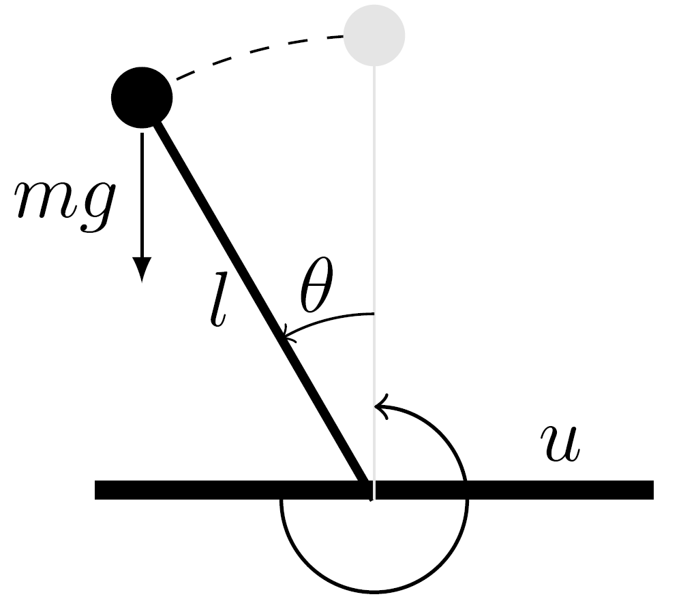
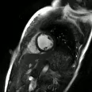
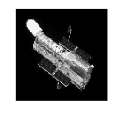

Ibrahim Kurban OzaslanI am a 5th year PhD student in Electrical and Computer Engineering at University of Southern California (USC).I am fortunate to be supervised by Mihailo Jovanovic. My PhD research aims to develop a system-theoretic framework for designing and analyzing optimization algorithms using tools from control theory.
Prior to joining USC, I received my BSc and MSc degrees
Email / Google Scholar / Github / LinkedIn / CV |
{kind=link}
|
Currently, I am working on optimization of structured nonconvex-nonconcave minimax problems with applications to robust machine learning. I am also interested in applications of optimization and optimal control to trajectory optimization for autonomus systems. Interests: Optimization, Control Theory, Machine Learning, Robotics |
Journal Publications
|
|
Stability of primal-dual gradient flow dynamics for multi-block convex optimization
Submitted to IEEE Transactions on Automatic Control, 2024 arXiv Description bla bla |
|
|
Accelerated forward-backward and Douglas-Rachford splitting dynamics
Automatica, 2024 Elsevier / arXiv Description bla bla |

|
M-IHS: An accelerated randomized preconditioning method avoiding costly matrix decompositions
Linear Algebra and its Applications, 2023 Elsevier / arXiv / Github Description bla bla |
|

|
Computing stabilizing feedback gains via a model-free policy gradient
IEEE Control System Letters, 2022 IEEE / PDF Description bla bla |
Conference Publications
|
|
From exponential to finite/fixed-time stability: Applications to optimization
IEEE Conference on Decision Control (CDC), 2024 arXiv Description bla bla |
|

|
Dynamic Mode Decomposition enables low-latency high temporal resolution reconstruction for
golden-angle spiral real-time MRI
ISMRM, 2024 (awarded Summa Cum Laude) ISMRM Description bla bla |
|
|
Dynamic Mode Decomposition (DMD) Cardiac Phase Estimation for adult and fetal real-time MRI
ISMRM, 2024 (awarded Summa Cum Laude) ISMRM Description bla bla |
|
|
Tight lower bounds on the worst-case convergence rate of primal-dual dynamics for equality constrained
convex problems
IEEE Conference on Decision Control (CDC), 2023 IEEE / PDF Description bla bla |
|
|
On the global exponential stability of primal-dual dynamics for convex problems with linear equality
constraints
American Control Conference (ACC), 2023 IEEE / PDF Description bla bla |
|
|
Exponential convergence of primal-dual dynamics for multi-block problems under local error bound
condition
IEEE Conference on Decision Control (CDC), 2022 IEEE / PDF Description bla bla |
|
|
On the asymptotic stability of proximal algorithms for convex optimization problems with multiple
non-smooth regularizers
American Control Conference (ACC), 2022 IEEE / PDF Description bla bla |
|
|
Iterative Hessian sketch with momentum
IEEE ICASSP, 2019 IEEE / PDF Description bla bla |
|
|
Fast and robust solution techniques for large scale linear system of equations
IEEE Signal Processing and Communications Applications, 2019 IEEE / PDF Description bla bla |
Master's Thesis
|

|
Fast and Robust Solution Techniques for Large Scale Linear Least Sqaures Problems
Bilkent University, 2020 Thesis / Slides Description bla bla |